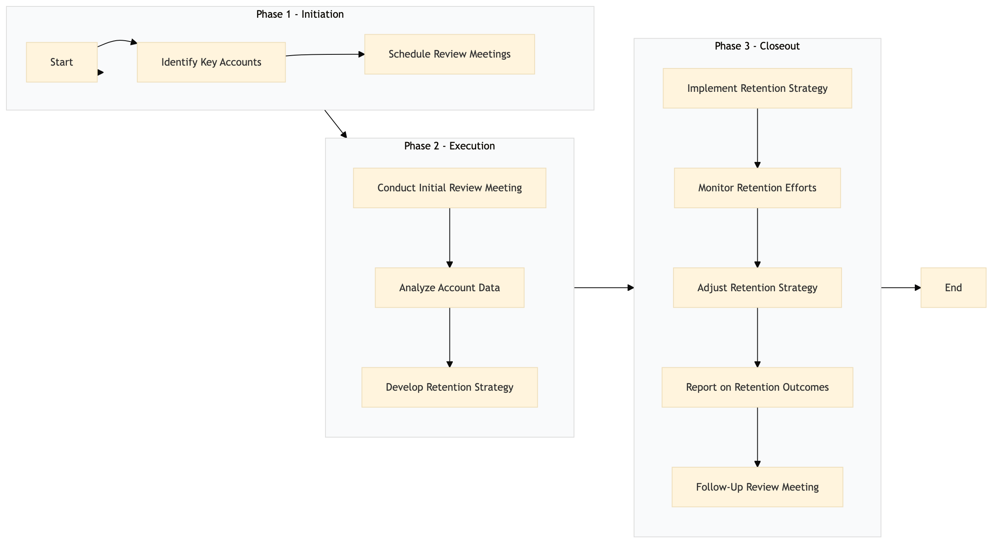

| Role | Steps |
|---|---|
| Revenue Manager | 1.1 2.1 2.2 2.3 3.1 3.2 3.3 3.4 3.5 |
| Account Manager | 1.2 2.1 2.3 3.1 3.5 |
| Data Analyst | 2.2 3.2 3.4 |
| Step | Name | Role | System | Input | Output | KPI | Dec? | Exc? | Pain Point / Risk |
|---|---|---|---|---|---|---|---|---|---|
| 1.1 | Identify Key Accounts | Revenue Manager | IDeaS G3 RMS | RMS data on high-value and at-risk accounts | List of key accounts for review | Less than 1 hour to generate list | N | Y | Accurate identification based on complex criteria |
| 1.2 | Schedule Review Meetings | Account Manager | Oracle OPERA Cloud, Book4Time | List of key accounts | Scheduled meeting times and dates | Less than 30 minutes to schedule meetings | N | Y | Conflicting schedules and availability |
| 2.1 | Conduct Initial Review Meeting | Account Manager, Revenue Manager | Oracle OPERA Cloud, Book4Time | Scheduled meeting details | Meeting notes and action items | Less than 60 minutes per meeting | Y | Y | Handling multiple accounts simultaneously |
| 2.2 | Analyze Account Data | Revenue Manager, Data Analyst | Oracle OPERA Cloud, SAP S/4HANA | Meeting notes and account data | Data analysis report | Less than 2 hours to complete analysis | N | Y | Complex data interpretation |
| 2.3 | Develop Retention Strategy | Account Manager, Revenue Manager | Oracle OPERA Cloud, Salesforce | Data analysis report | Retention strategy document | Less than 1 hour to develop strategy | Y | N | Balancing cost and benefit for retention efforts |
| 3.1 | Implement Retention Strategy | Account Manager, Revenue Manager | Oracle OPERA Cloud, SynXis CRS | Retention strategy document | Implemented retention actions | Less than 24 hours to implement actions | N | Y | Coordination across multiple departments |
| 3.2 | Monitor Retention Efforts | Revenue Manager, Data Analyst | Oracle OPERA Cloud, SAP S/4HANA | Implemented retention actions | Monitoring report | Less than 1 hour per week to monitor | Y | N | Real-time data availability |
| 3.3 | Adjust Retention Strategy | Account Manager, Revenue Manager | Oracle OPERA Cloud, Salesforce | Monitoring report | Adjusted retention strategy document | Less than 1 hour to adjust strategy | Y | N | Dynamic response to changing account needs |
| 3.4 | Report on Retention Outcomes | Revenue Manager, Data Analyst | Oracle OPERA Cloud, Microsoft Power BI | Adjusted retention strategy document | Retention outcomes report | Less than 2 hours to generate report | N | Y | Detailed reporting requirements |
| 3.5 | Follow-Up Review Meeting | Account Manager, Revenue Manager | Oracle OPERA Cloud, Book4Time | Retention outcomes report | Final meeting notes and action items | Less than 60 minutes per meeting | Y | Y | Ensuring all stakeholders are aligned |
A structured process document for SM-SL-06 Key Account Review & Retention at a Marriott full-service hotel, focusing on sales and account management.